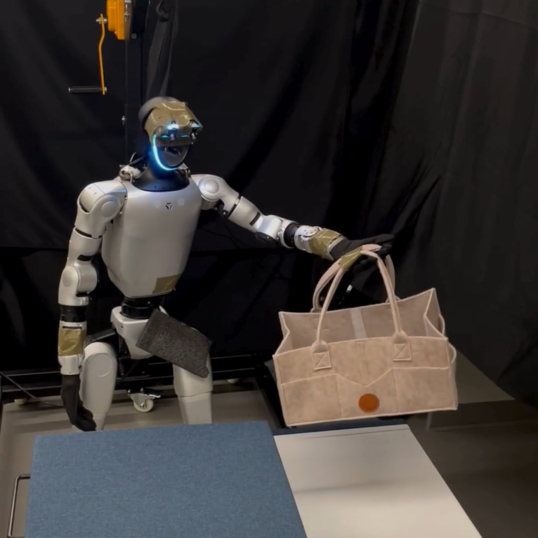
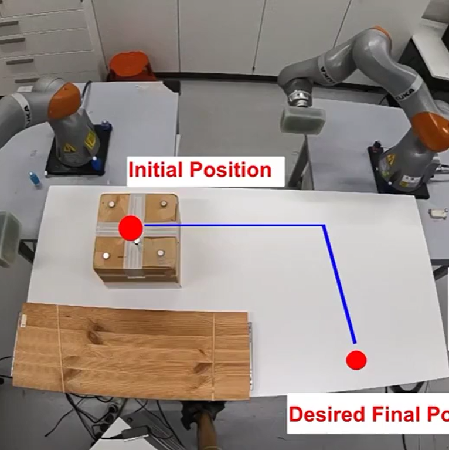

|
André Schakkal I’m a robotics engineer specializing in robot manipulation, reinforcement learning, and foundation models. I recently completed my Master’s degree in Robotics, with a minor in Data Science, at EPFL (2025), conducting my thesis at MIT under the supervision of Navid Azizan and Zhutian Yang. My work at MIT focused on long-horizon humanoid manipulation using vision-language models and imitation learning. Throughout my Master’s, I worked on deploying learning-based control systems in both simulation and real-world robots, including quadrupeds and humanoids, collaborating with Auke Ijspeert as well. Prior to that, I earned my BSc in Mechanical Engineering from EPFL (2022). I’m particularly interested in building intelligent systems that can reason, plan, and act over extended tasks, and I’m open to opportunities in robotics research and applied AI. |
{kind=link}
Research |
|

|
Hierarchical Vision-Language Planning for Multi-Step Humanoid Manipulation
André Schakkal, Ben Zandonati, Zhutian Yang, Navid Azizan 2025 Robotics: Science and Systems Conference (RSS) Workshop on Robot Planning in the Era of Foundation Models, 2025 project page / paper This work presents a hierarchical framework that enables humanoid robots to autonomously execute multi-step manipulation tasks. The system combines a low-level RL controller for whole-body motion tracking, mid-level imitation-learned skills for generating action-specific motion targets, and a high-level vision-language module that sequences skills and monitors execution in real time. Tested on a Unitree G1 humanoid performing a pick-and-place task, the system achieves a 73% success rate. |
|

|
Learning the Inverse Hitting Problem
Harshit Khurana, James Hermus, Maxime Gautier, André Schakkal, Aude Billard 2025 IEEE Robotics and Automation Letters (RA-L), 2025 paper This work presents a data-driven framework for impulsive object manipulation, where robots move objects by hitting them. Using a dual-arm air-hockey setup, the system learns the relationship between hitting force and object motion via a Gaussian Mixture Model and predicts impacts with an Impact-Aware Extended Kalman Filter. The approach enables collaborative, long-range object placement through sequential, golf-like hits. |

|
Dynamic Object Catching with Quadruped Robot Front Legs
André Schakkal, Guillaume Bellegarda, Auke Ijspeert 2024 IEEE/RSJ International Conference on Intelligent Robots and Systems (IROS), 2024 paper / video This work enables a quadruped robot to catch thrown objects using its front legs while standing on its rear legs. Using an onboard camera and a fine-tuned YOLOv8 model, the robot detects objects, predicts their trajectories, and executes a precise catching maneuver. A Gaussian Mixture Model (GMM) identifies optimal catching positions, enabling an 80% success rate across diverse throws. |

|
Synergizing Natural Language Towards Enhanced Shared Autonomy
Shalutha Rajapakshe, Atharva Dastenavar, André Schakkal, Emmanuel Senft Companion of the 2024 ACM/IEEE International Conference on Human-Robot Interaction (HRI), 2024 paper This work introduces a voice-based shared autonomy framework for assistive robots, enabling users to refine robot behavior through natural language instead of physical inputs like joysticks . A fine-tuned DistilBERT model interprets sequences of verbal commands to infer correction directions (e.g., left, right, up) and distinguish between environment-dependent and independent instructions. The lightweight model runs on a CPU, outperforming larger transformers on complex sequential commands, and lays the groundwork for voice-based corrections in shared autonomy systems. |
Projects |
|
|
Camera-Based Humanoid Teleoperation
André Schakkal, Ben Zandonati, Zhutian Yang, Navid Azizan 2025 Robotics: Science and Systems Conference (RSS) Workshop on Robot Planning in the Era of Foundation Models, 2025 project page / paper Summary |
Honors and Awards
|